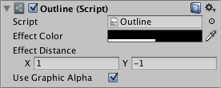

Outline¶
The Outline component adds a simple outline effect to graphic components such as Text or Image. It must be on the same GameObject as the graphic component.

Properties¶
Property: |
Function: |
|---|---|
Effect Color |
The color of the outline. |
Effect Distance |
The distance of the outline effect horizontally and vertically. |
Use Graphic Alpha |
Multiplies the color of the graphic onto the color of the effect. |